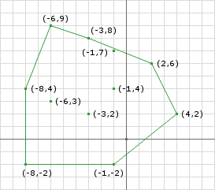
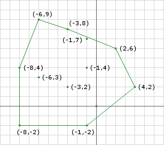

Impulse-based approach operates on the velocity of the bodies and not on the force or acceleration. This means the solver calculates and applies a direct change in the linear and angular velocities of the bodies, instead of calculating and applying corrective forces and relying on integration to then change the velocities. With impulse-based dynamics, the goal is to find the impulses that result in velocities that solve the constraints.
The general sequence of a simulation step using impulse-based dynamics is somewhat different from that of force-based engines:
- Compute all external forces.
- Apply the forces and determine the resulting velocities
- Calculate the constraint velocities based on the behavior functions.
- Apply the constraint velocities and simulate the resulting motion.
First let's define the impulse of force \(J_F\) as
$$J_F = \int_{t_0} ^{t_1} F dt$$
During a small time slice \( \langle t_0, t_1 \rangle \). The impulse of force corresponds to the difference of linear moments
$$\Delta p = p(t_1) - p(t_0) = J_F$$
while the impulsive torque of a force \(F\) applied in point \(r\) in the world space is defined as
$$J_{\tau} = (r - r_c) \times J_F$$
Like the impulse of force changes the linear momentum, the impulsive torque changes the angular momentum
$$\Delta b = b(t_1) - b(t_0) = J_{tau}$$
Next comes to how can we get impulse from collision process. As shown in the following figure, Object A and B collides at point P with relative position \(r^{AP}\) and \(r^{BP}\) and relative velocity as \(v ^{AB}\).
The normal vector for the collision can be defined as
$$v^{AB} \cdot n = (v ^{AP} - v^{BP}) \cdot n $$
We can express the impulse with a single scalar \(j\) times the normal, giving us \( jn \). According to Newton's Third law, the opposite force is applied to the other entity.
The collision response equation for object can be derived by
$$v_2^{A} = v_1^{A} + \frac{j}{M^{A}} n$$
$$v_2^{B} = v_1^{B} - \frac{j}{M^{B}} n$$
where M is the center of mass, so we solve the scalar j as
$$j = \frac{-(1+e)v_1^{AB} \cdot n}{n \cdot n (\frac{1}{M^{A}} + \frac{1}{M^B})}$$


 
